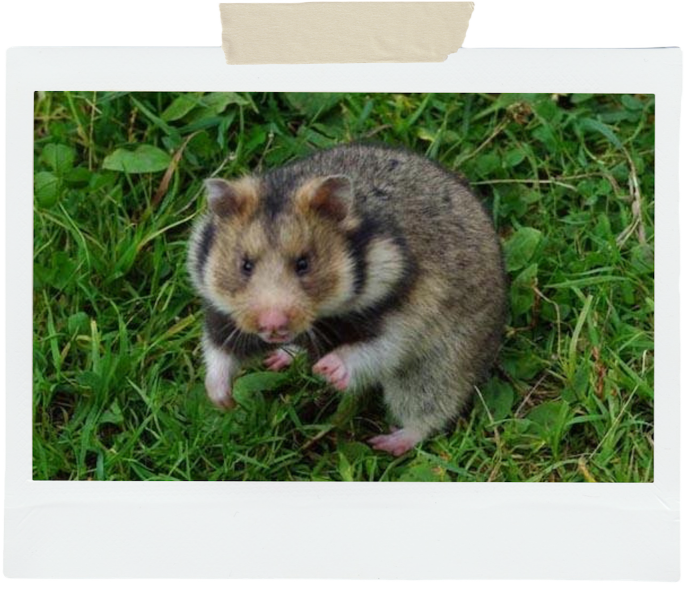

Hamster species
Hamsters come from various regions and environments resulting in a wide range of species that are all unique in their own way. There are 18 species of hamster but only five of those are domesticated (meaning).First of the 18 species is
Mongolian hamsters (Allocricetulus Curtatus)
- Origin:
- This species of hamster is found in China, Mongolia, and Russia.
- Habitat:
- Living in habitats of sand dunes, grasslands or semi desserts.
- Weight and Height:
- Weighing 30 to 65 grams and measuring 3.9 to 5 inches in length.
- Additional Information:
- This species unlike the typical hamsters tend to build shallow short burrows with several entrances.
Eversmann’s or Kazakh Hamster (Allocricetulus Eversmanni)

- Origin:
- This species is found in China, Kazakhstan and Russia
- Habitat:
- Would inhabit in dry grasslands, semi desserts, and sometimes even found in agricultural fields
- Weight and Height:
- Weighing 32 to 68 grams and 4 to 5.3 inches in length
- Additional Information:
- They do not hibernate like other species but daily activity in winter is definitely lower, they typically eat seeds but also eat insects and mollusks on a regular basis there are even records of them eating lizards and young ground squirrels.
Gansu Hamster (Cansumys canus)
- Origin:
- This species is found in China
- Habitat:
- Usually an arboreal species found in deciduous forests
- Weight and Height:
- Weighing 44 to 57 grams and measuring 5 to 5.5 inches in length
- Additional Information:
- This species has been found to be a herbivore feeding on leaves and grasses unlike your typical domesticated hamster
Chinese Hamster (Cricetulus barabensis)
- Origin:
- This species in the wild is found in China, Korea, Mongolia and Russia
- Habitat:
- Inhabits in arid areas including grasslands and semi-dessert habitats but have been known to adapt and commonly be found in croplands
- Weight and Height:
- Weighing 30 to 50 grams and 3 to 5 inches in length
- Additional Information:
- One of the five domesticated species.They often will have a barrow that runs 3ft in length and a depth of 4 to 19.6 inches.
Long Tailed Dwarf Hamster (cricetulus longicaudatus)

- Origin:
- This species is found in China, Kazakhstan, Mongolia and Russia
- Habitat:
- They inhabit in areas of desserts to forests to alpine meadows and even found in rocky mountains and semi-desserts areas
- Weight and Height:
- Weighing 15 to 50 grams and measuring 3 to 5 inches in length
- Additional Information:
- They would occupy shallow burrows typically made under rocks and sometimes occupies burrows constructed by other small animals
Sokolov’s Dwarf Hamster (cricetulus longicaudatus)

- Origin:
- This species is found in China and Mongolia
- Habitat:
- Typically live in semi desserts habitats
- Weight and Height:
- Weighing around 60grams and measuring 3 to 4.4 inches in length
Tibetan Dwarf or Ladakh Hamster (urocricetus alticola)
- Origin:
- They can be found in China, India and Nepal
- Habitat:
- Typically occupying coniferous and birch forest to desert grasslands, shrubland, swampy meadows and highlands meadows
- Weight and Height:
- Weighing 22 to 48 grams and 3 to 3.9 inches in length
Kam Dwarf Hamster (urocricetus kamensis)

- Origin:
- They are found in China
- Habitat:
- And typically leaves in high mountains grasslands, shrubby marshes and open grasslands
- Weight and Height:
- Weighing 20 to 40 grams and 3.4 to 4.4 inches in length
- Additional Information:
- They’ve also been found to exhibit activity during the day and the night
European Hamster (cricetus cricetus)

- Origin:
- They are found in a wide range from Australia, France, Germany, Belgium, Russia, Switzerland and Ukraine
- Habitat:
- They usually live in crops but have spread to habitats like meadows, gardens and orchards living close to humans
- Weight and Height:
- Weighing 220 to 460 grams and 8 to 13 inches in length
- Additional Information:
- This is the one of the largest hamster species and unfortunately is critically endangered.They are big burrowers so they prefer to live in deep heavy soils
Syrian Hamster (mesocricteus auratus)
- Origin:
- In the wild they are found in Syria and turkey
- Habitat:
- Inhabiting in fields and annual crops like wheat, barley, chickpeas, lentis and vegetables
- Weight and Height:
- Weighing 120 to 200 grams and measuring 6 to 8 inches length
- Additional Information:
- One of the popular domesticated species of hamster.They can live in burrows that can reach to 9 meters long
Turkish Hamster or Brandt’s Hamster (mesocricetus brandti)

- Origin:
- They are found in Armenia, Iran, Russia, and Turkey
- Habitat:
- They would live in dry open grasslands and in agricultural lands
- Weight and Height:
- Weighing around 174 grams and being 7 inches in length
- Additional Information:
- Their burrows would have several passages and often would have burrows within colonies of common vole and social vole
Romanian Hamster (mesocricetus newtoni)
- Origin:
- Found in Bulgaria and Romania
- Habitat:
- Living in dry habitats like barren rocky areas, grasslands, burclover, dandelion, and cereal fields and gardens
- Weight and Height:
- Weighing 60 to 130 grams and measuring 5.3 to 6inches in length
Ciscaucasian Hamster (mesocricetus raddei)

- Origin:
- Found in Georgia and Russia
- Habitat:
- Typically inhabit in cereal / herbs grasslands, agricultural places, and especially in forest line between fields
- Weight and Height:
- Weighing 200 to 300 grams and being 6 to 8.6 inches long
- Additional Information:
- They tend to be most active at dusk and night but in spring and summer they are also diurnal.And can store up to 35lbs of food for winter and hibernates typically from 4 to 6 months depending on the winter temperatures
Grey Dwarf Hamster or Armenian Hamster (nothocricetulus mifratorius)
- Origin:
- They are found in wide range of places like Afghanistan, Bulgaria, China, Greece, India, Israel, Mongolia, Pakistan, Romania, Russia, turkey, and Ukraine
- Habitat:
- Inhabits usually in dry grasslands and semi-desserts and now also inhabits agricultural lands, gardens, and even sometimes in houses
- Weight and Height:
- Weighing anywhere from 20 to 58 grams and being 3 to 6 inches long
Campbells Dwarf Hamster (phodopus campbelli)
- Origin:
- In the wild they would be found in China, Kazakhstan, Mongolia, and Russia
- Habitat:
- Typically leaves in grasslands, semi desserts and desserts areas
- Weight and Height:
- Weighing 55 to 66 grams in weight and around 5 inches in length
- Additional Information:
- It is one of the few domesticated hamsters.Their burrows would have four to six entrances leading to nest chambers as deep as 3ft and some may occupy burrows of gerbils instead of making their own
Winter White Hamster (phodopus sungorus)

- Origin:
- In the wild they are typically found in Kazakhstan and Russia
- Habitat:
- Living in dry plains and mountains grasslands
- Weight and Height:
- Weighing 45 to 55 grams and measuring 5 inches in length
- Additional Information:
- This species is one of the domesticated species of hamster and have the ability to change coat coloring to white based on the length of light during the days.Their winter nests can be up to 3ft below the ground and often uses rodents’ burrows.
Roborovski Hamster (phodopus roborovskii)
- Origin:
- In the wild they are found in China, Kazakhstan, Mongolia, and Russia
- Habitat:
- They inhabit in sandy desserts and grasslands
- Weight and Height:
- Weighing 20 to 25 grams and measuring 2 to 3 inches in length
- Additional Information:
- The smallest domesticated species of hamster.Their burrows are dug between sand dunes or at the edge of them and would extend 35 inches deep
Great Long Tailed Hamster or Korean Hamster (tscherskia triton)

- Origin:
- They are found in China, Korea, north Korea and Russia
- Habitat:
- Generally found in open dry areas but also found at fields edges, along canals, roads and rice fields
- Weight and Height:
- Weighing a wide range 92 to 241 grams and measuring 5.7 to 8.6 inches in length
- Additional Information:
- They would construct deep vertical barrows and are primarily nocturnal